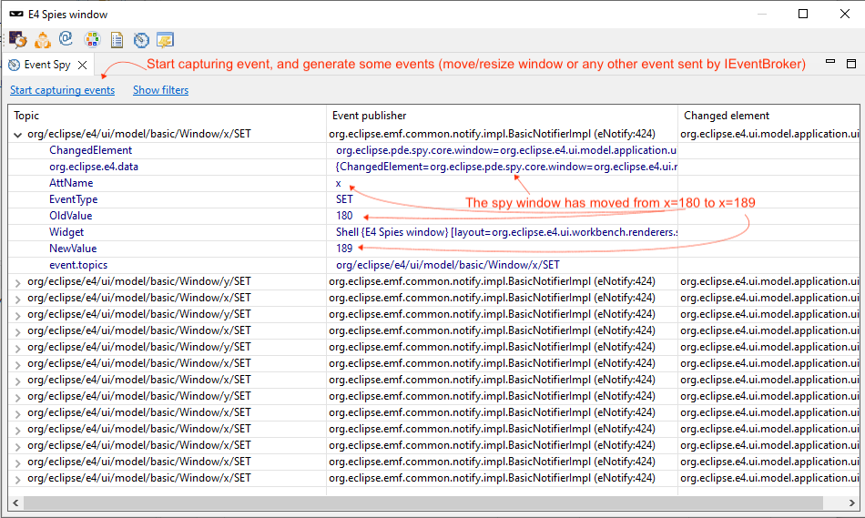
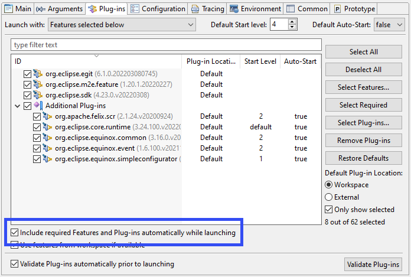
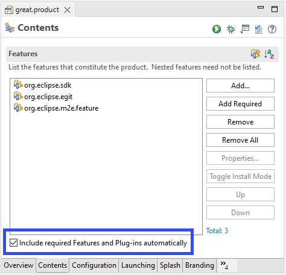

Dialogs, Wizards and Views
The Event Spy allows to view the events sent using an IEventBroker and is now available via PDE, using the Spies menu or the Alt+Shift+F8 shortcut (on windows).

Start capturing events, and check the event's contents in the table. For instance, here the spy window has moved, and all the location events were caught.
Missing plug-ins/features are only added to the launched application but not to the Launch Configuration. This allows to specify only the 'root' features/plug-ins you actually want in your application and to let Eclipse include only the minimal set of requirements in each launch. Consequently new dependencies don't have to be added to the Launch Configuration anymore.

Editors
This controls if the corresponding option, which is described above, is activated or not for the Launch Configuration associated with the product launch. By default this option is enabled for Feature and Plug-in based products to behave the same like when the product is build with Eclipse Tycho.

- Launching a product based on features creates a feature-based Launch Configuration
- Missing requirements are included by default (as described above)
- When launching a plugin-based product optional requirements are ignored by default when computing missing requirements
- When automatically including requirements, fragments are not added just because their host-plug-in is included
org.eclipse.sdk feature.
The Product is ready to launch.
If you want Git support, just add the org.eclipse.egit feature and in case you want to develop Maven projects in your Product, just add org.eclipse.m2e.feature.